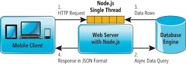

What is Node?
Node.js is an open source, cross-platform runtime environment for server-side and networking applications. Node.js applications are written in JavaScript, and can be run within the Node.js runtime on OS X, Microsoft Windows, Linux, FreeBSD, and IBM i.
Node.js uses the Google V8 JavaScript engine to execute code, and a large percentage of the basic modules are written in JavaScript. Node.js contains a built-in library to allow applications to act as a Web server without software such as Apache HTTP Server or IIS.
Why was Node created?
Node.js was created and first published for Linux use in 2009. Its development and maintenance was inspired by Ryan Dahl and sponsored by Joyent, the firm where Dahl worked. Dahl was motivated to create Node.js after seeing a file upload progress bar on Flickr.
 Creator of Node JS: Ryan Dahl
The browser did not know how much of the file had been uploaded and had to query the Web server. Dahl desired an easier way. Node gathered international attention after its debut at the inaugural JSConf EU conference. NPM, a package manager for Node.js libraries, was introduced in 2011.
Creator of Node JS: Ryan Dahl
The browser did not know how much of the file had been uploaded and had to query the Web server. Dahl desired an easier way. Node gathered international attention after its debut at the inaugural JSConf EU conference. NPM, a package manager for Node.js libraries, was introduced in 2011.
What does Node actually do?
Node establishes two-way connections where client and server can initiate communication, which allows for the flow of data back and forth seemlessly. What makes it different from other server side platforms is traditionally with other server side applications, the client initiates a request to the server, and then; the server responds to the client initiating the request. However with Node as Wikipedia states, " Node uses an event loop, instead of processes or threads, to scale to millions of connections happening at the same time[citation needed. In contrast to other event-driven servers, Node.js's event loop does not need to be called explicitly. Instead callbacks are defined, and the server automatically enters the event loop at the end of the callback definition. Node.js exits the event loop when there are no further callbacks to be performed." Additionally, it’s all based on HTML, CSS and JS running over the standard port 80 that makes it desirable for developers to use.
The Magic of Node
What makes Node special is that is considered a NIO(non-blocking Input/Output) application. OK, so speak english.
An example of blocking is how some web servers like ones in Java or PHP handle requests. If your code does something blocking, like reading something from the database, your code "stalls" at that line and waits for the operation to finish. In that period, your machine is holding onto memory and processing time for a thread that isn't doing anything.
What Node does is eliminate the blocking. Node uses one thread to service all requests. Dahl designed it with the idea that the I/O is the bottleneck, not computations.When requests arrive at the server, they are serviced one at a time. When the code serviced needs to query a database, it sends off a request to that database. However, instead of waiting for the response and stall, it sends the callback to a second queue and the code continues running. Now when the database returns data, the callback gets queued in a third queue where they are pending execution. When the engine is doing nothing, it picks up a callback from the third queue and executes it. So basically it keeps multiple process running simulatenously.
Wrapping it up
Node is a very powerful tool that was designed for client side, realtime type application processing efficiency and performance. It harnesses the power of Google's V8 and synchronizes it with HTML, CSS, and JS. It is asynchronous, saves memory, and a must for any serious developer. Happy Coding!!
Any sufficiently advanced technology is indistinguishable from magic. ~Arthur C. ClarkeSource code: NodeJS. Get Started with Node JS.